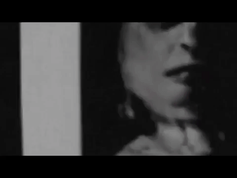

Audio Visual Experiments
Year: 2020
Music Video for Emerald Teeth by T Gowdy, Commissioned by Constellation Records.
Music Video for Teebs ft Panda Bear: Did It Again. 2022 Brainfeeder Records

LuisaMei and Kai Luen-Liang // xolo threads radio set
Year: 2020